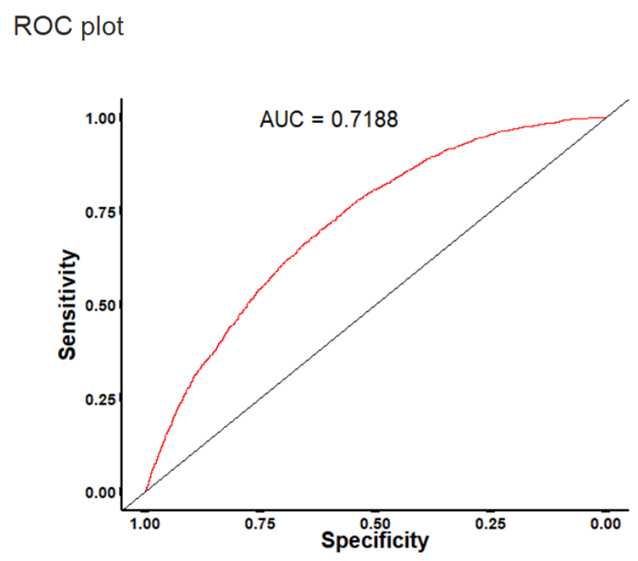
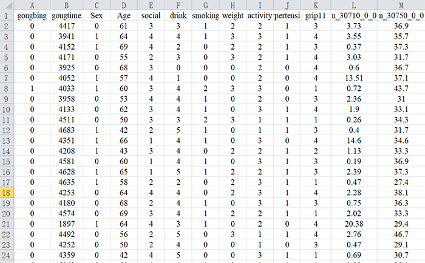
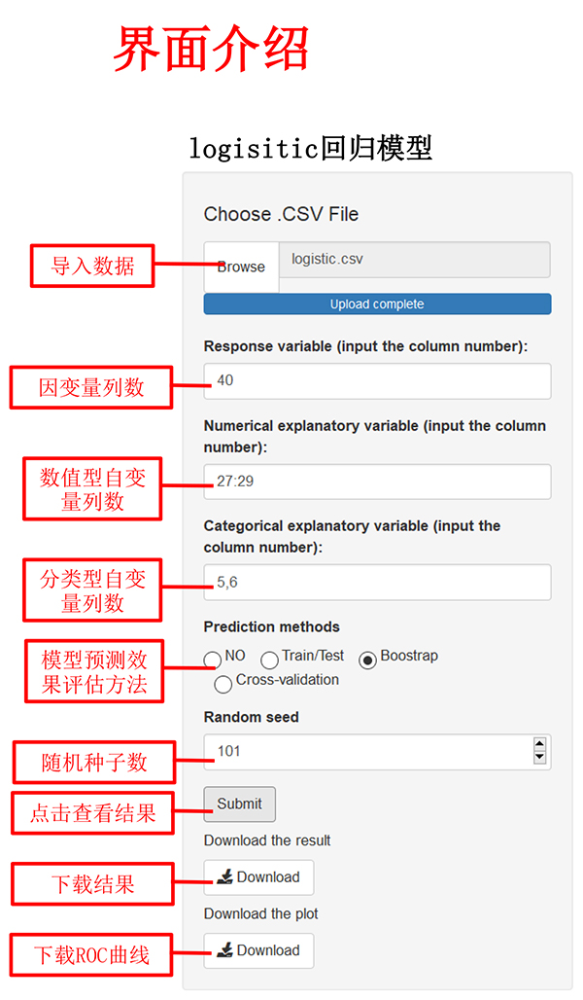
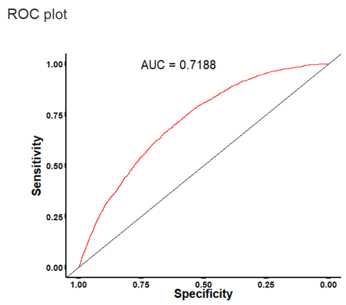

2、数据变量名必须为英文、阿拉伯数字或下划线的组合
3、自变量（Explanatory variable）可以输入多列，以英文状态下的逗号或冒号分隔，如：2,3,4或2:4
4、暂时只提供二分类因变量资料的非条件logistic回归分析
5、导入数据后，各变量所对应的列数可在输出界面显示和查询
示例如下：

如果需要测试模型的预测效果，则会输出相应的测试方法预测的AUC指数值以及ROC曲线。
示例如下：

| logistic回归 | 一、数据格式 | |
|  | ||
|  | ||
| 注：
2、数据变量名必须为英文、阿拉伯数字或下划线的组合 3、自变量（Explanatory variable）可以输入多列，以英文状态下的逗号或冒号分隔，如：2,3,4或2:4 4、暂时只提供二分类因变量资料的非条件logistic回归分析 5、导入数据后，各变量所对应的列数可在输出界面显示和查询
|
||
| 二、输出结果展示 | ||
| 输出结果包括偏回归系数、标准差、标准误、卡方值、P值、OR值及其可信区间。 示例如下： 如果需要测试模型的预测效果，则会输出相应的测试方法预测的AUC指数值以及ROC曲线。 示例如下：  |